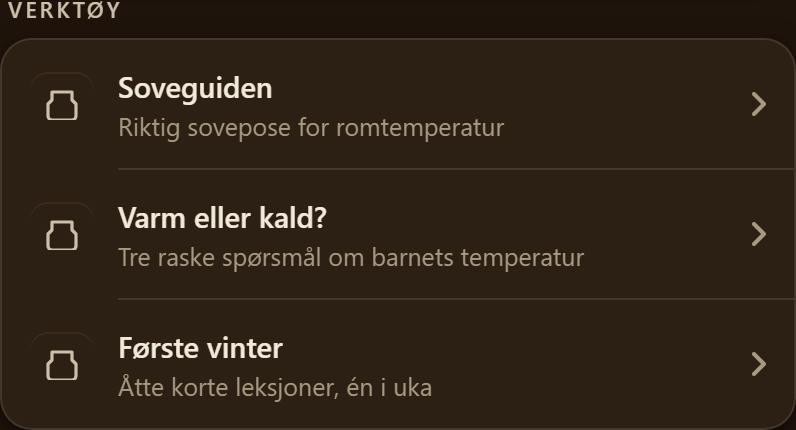
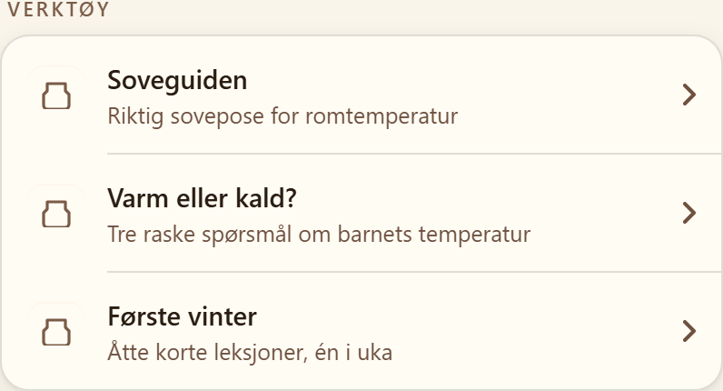
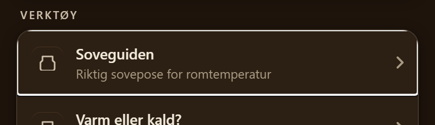
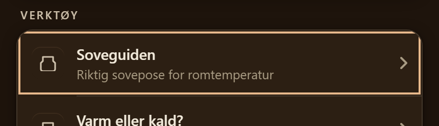
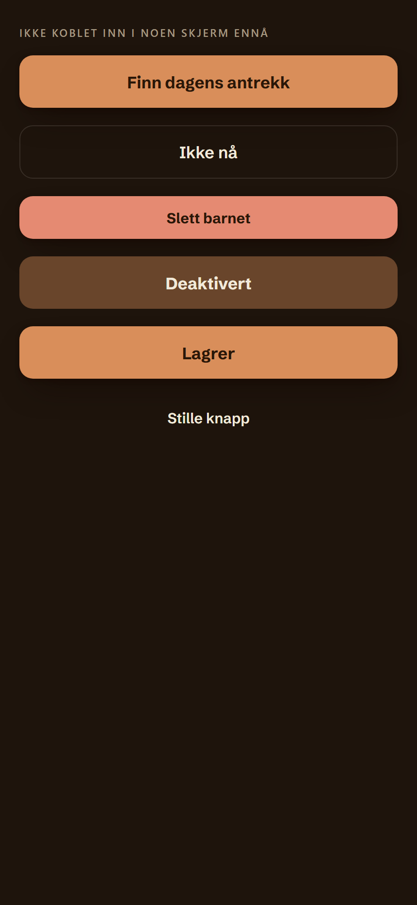

Avstandsskala, knapp, ark og rad. Alle målt før de ble bygget.
Disse radene var en ordrett kopi av stilene fra Innstillinger — seks stilblokker, tegn for tegn. Nå deler begge stedene samme komponent, så en endring ett sted ikke lar det andre drive fra hverandre i stillhet.


Ringen du får når du bruker tastatur i stedet for finger. Appen hadde ingen felles regel for den — flere skjermer fikk nettleserens hvite standard, andre fikk ingenting. Ringen måler 1,47:1 mot den oransje knappen og 10,12:1 mot bakgrunnen: den fungerer bare fordi den ligger utenfor kanten.


Hovedknapp, kant, slett, deaktivert, venter og stille. Appen hadde 37 ulike knappevarianter; dette er flaten de skal migreres til. Alle tilstandsfarger er regnet ut i begge temaer — laveste tall er 5,17:1 mot kravet 4,5. «Slett» hadde tidligere nøyaktig samme farge som hovedknappen.
Ingen skjerm bruker den ennå — det er fase 3